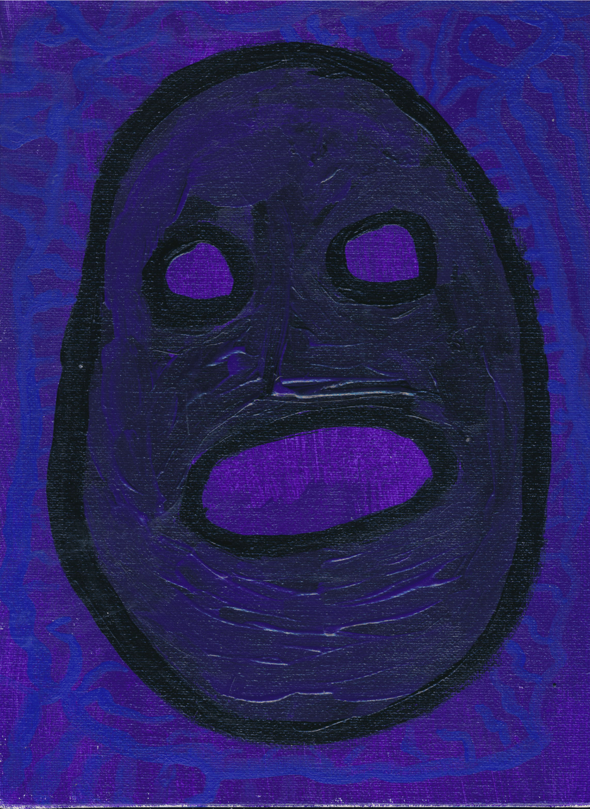
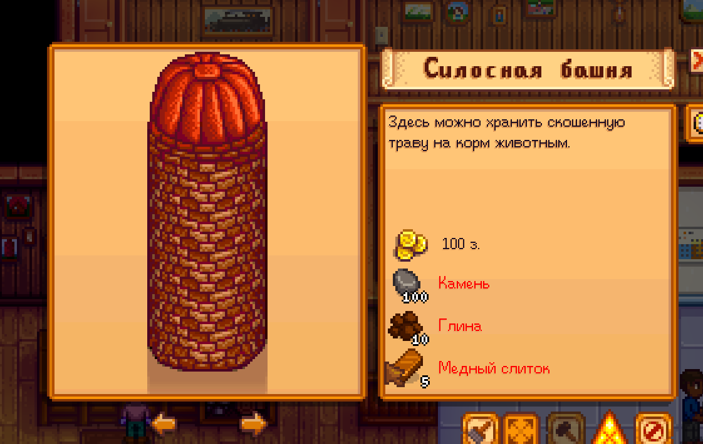
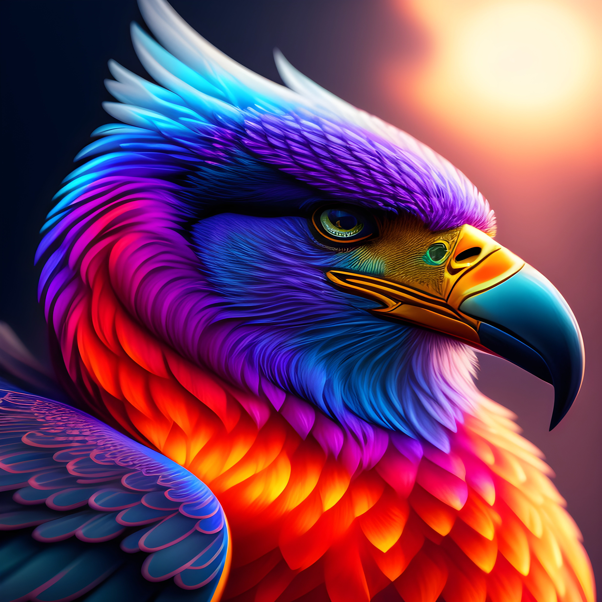

| Дата | |
|---|---|
| 28.04 7.00 - 23.00 |
|
Сегодня я устроился в Сбербанк
--- Поучаствовал в bootcamp (это местная корпоративная социализация) Получил корпоративную почту, а также доступ в домен, эцп (подписал трудовой договор) Побывал в переговорке с наставником, познакомился со своим наставником и провели презентацию Познакомился местным отделом сис. админов, он был позитивным; мне дали рабочий ноут; Получил первые доступы
2025-04-24 - Хорошо что ушёл оттуда, это место было и вправду невыносимо
ZQWY
println! (ВОСКЛИЦАТЕЛЬНЫЙ ЗНАК УКАЗЫВАЕТ НА МАКРОС)
Прочитать что такое fadetime, Midi Processor, Hardcoded Polyphonic FX1, Routing Matrix, Global Modulation Container, Synthesiser Group1, Global Cables, webview,
URLS:
https://music.yandex.ru/artist/9811686 https://music.apple.com/us/artist/zqwy/1524644220 https://vk.com/artist/zqwy https://rapchat.com/profile/340DB690-9E23-11EB-8017-D314B4DFDD5Dистории из жизни которые сохранились
Cybernetic Lifeform
Kuzya
Na Hrane

Cyber Logos
Концепт Лес Фантазий
Запрос для первой генерации
Пожалуйста, придумай четыре любых элемента (это может быть абсолютно что угодно, главное не указывай как будто это абстрактные буквы: А, Б, В, Г, X, Y, Z) и соотнеси в процентном соотношение сколько процентов есть в каждом (указывай каждое вещество, даже если в нём ноль процентов) из этих элементов в друг-друге (фантазируй, не бойся сделать необъективно, но указывай точно), значение с плавающей точкой
Если выберешь химический элемент не указывай формулу в содержании, а запиши название
Пример как это будет выглядеть (запиши в этом формате без отступов и переносов строки):
Название элемента - "Укажи тут название элемента"
Содержит:
- Элемент N: 100%
Запрос для N генерации
Пожалуйста, придумай четыре любых элемента (это может быть абсолютно что угодно, главное не указывай как будто это абстрактные буквы: А, Б, В, Г, X, Y, Z) и соотнеси в процентном соотношение сколько процентов есть в каждом (указывай все вещества без исключений, даже если в нём ноль процентов) из этих элементов в друг-друге (фантазируй, не бойся сделать необъективно, но указывай точно), значение с плавающей точкой
Для анализа содержание веществ, добавь ещё и мои вещества из списка:
Золото; Дракон; Роза; Аргон; Дерево; Динамит; Флаг; Государство;
(НЕ ЗАБУДЬ УКАЗАТЬ ВСЕ ВЕЩЕСТВА)
(Не допускай ошибку когда в содержании элемента, нет ключевого элемента)
(В сумме должно выходить 100%)
Если выберешь химический элемент не указывай формулу в содержании, а запиши название
Пример как это будет выглядеть (запиши в этом формате без отступов и переносов строки):
Название элемента - "Укажи тут название элемента"
Содержит:
- Элемент N: 100%
Запрос для N генерации с множеством элементов
Пожалуйста, придумай четыре любых элемента (это может быть абсолютно что угодно, главное не указывай как будто это абстрактные буквы: А, Б, В, Г, X, Y, Z) и соотнеси в процентном соотношение сколько процентов есть в каждом (указывай все вещества без исключений, даже если в нём ноль процентов) из этих элементов в друг-друге (фантазируй, не бойся сделать необъективно, но указывай точно), значение с плавающей точкой
Для анализа содержание веществ, добавь ещё и мои вещества из списка:
Золото; Дракон; Роза; Аргон; Дерево; Динамит; Флаг; Государство; Медь; Уран; Любовь; Яблоко; Слива; Вода;
(НЕ ЗАБУДЬ УКАЗАТЬ ВСЕ ВЕЩЕСТВА)
(Не допускай ошибку когда в содержании элемента, нет ключевого элемента)
(В сумме должно выходить 100%)
(Не повторяй вещества в содержании)
Если выберешь химический элемент не указывай формулу в содержании, а запиши название
Пример как это будет выглядеть (запиши в этом формате без отступов и переносов строки):
Название элемента - "Укажи тут название элемента"
Содержит:
- Элемент N: 100%
Записать элементы в таблицу
В каждом элементе в каком-то количестве содержится тот или ной элемент
Пожалуйста придумай sql-запрос который записывает множество элементов с типом real и непустой для субд SQLITE
Эпоха сюжета: текущее время с небольшим техническим отрывом в области кибернетики
Запомнил несколько ключевых кадров, для удобства разбил их на несколько сюжетных фрагментов
Знакомство в аудитории
Помещение в стиле хайтек-модерна в цветах серых, близких в тёмным
Лектор объясняет что-то, но содержание неизвестно, зато было переключение восприятие мира между двумя персонажами - парень и девушка; Одеты были в нью-йорк кэжуал, сдержанно тёмные цвета, не обтягивает, похоже под осенью погоду
Их мысли в тумане, однако, между ними связь, находясь на расстояние нескольких людей и столов, внимание было сфокусировано в первую очередь на них
Перемена
С нарастающей постепенностью, начинается паника (тревожное состояние, весь фокус в ожидание чего-то); лектор выходит из аудитории
В этой момент происходит провал восприятия сна, переход в следующий кадр, пропускается этап выход из комнаты
В следующем кадре - наблюдаем как бежит девушка, а за ним теперь невидимый парень (которого вижу только зритель aka моё восприятия)
Парень обладал способностью - невидимость; нельзя описать что в этом состояние его невозможно ощутить, к примеру с помощью тепловизора не получится, а вот анализируя радиочастотные волны, возможность появляется и дотрагивается то живого существа, то плоть ощущает как тело дотронулось до газообразно-жидкого вещества,
Невидимка не становится бессмертным, скорее наоборот менее уязвимым, преобладает хрупкость тела когда сталкивается с огромной силой
Его состояние интерпретируется при помощи особенной антенны через радиоволны из радиовсплеска с далекой галактики
Также в его арсенале есть артефакт который он использовал в момент >> продолжение истории с девушкой
Девушка бежит по вытянутой прямоугольной комнатке (всё происходит на первом этаже), добегает до перекрестной комнаты которая чуть сужена, а дальше следует также прямоугольная комната: справа стекло, сквозь него падает яркий солнечный свет, впереди стоит задом лектор, а по левую руку собрались студенты-военные (не могу их функцию описать, пусть будут - участники аудитории), встали в шеренгу и готовились к нападению с этого окна
Девушка смотрит на лектора, подбегает парень, выходит из невидимости, активирует этот артефакт из его вены на руке выстреливает гарпун (хотя скорее откуда-то в целом из руки, подробности не было), направляет на девушку обхватывая словно хлыстом, а на конце острое лезвие пронзает её руку, они объединились и мигом обнялись, и как только он использовал невидимость, она также перешла в состояние невидимости: которое сопровождается синеватым цветом вызывающий спокойствие... До этого момента всё происходящее было в состояние паники, а в этот небольшой отрезок наступило спокойствие, нет страхов, паники или безумия; объятие закончились и как обернулся лектор, на его лице поверх словно цифровая маска, было нечто красное источающее совершенно другие радиоволны которые видны были только им, он выглядел однозначно враждебно; герои бегут обратно в коридор и направляются к выходу
Выход и пробуждение
В этой момент происходит провал восприятия сна, переход в следующий кадр
Визуальная демонстрация, похоже на инфографику; происходит объединение мужского и женского мозга в единую систему,
Визуальная часть: их нейроны соединяются вместе и получается огромная сеть, это приводить к тому что они обмениваются: памятью, видят истории, понимают и разделяют боль, страхи, предвзятости, начинают чувствовать себя словно один полноценный организм
Резкий переход, видна капсула в котором плавает, мутируется, метаморфоза и создание существа (не могу описать что это), там используется этот объединённый мозг
Герои в состояние невидимости залезают в навесную часть и ползут по ней к следующей комнате которая ведёт к выходу
Пока ползут, начинается вторжение (сложно их визуально описать, из общего они гуманоиды на двух ножках, ничем особенным в плане радиоволн не подсвечиваются)
Никакого внимание существа не обращают, впрочем обнаружилась другая особенность пространство, чуть впереди было крайнее шумное неизвестность в прямоугольной форме и округленными углами, поверхность шума словно потерянная информация; сквозь неё персонажи пройти не хотят, они предполагают это нанесёт им вред, они решают спустится и аккуратно пройти сквозь рой существ; подходя к выходу видно что выйти не получится в невидимости, свернули и решили идти по подвалу
девушка говорит: "я верю в бога",
парень немного промолчав, заторможено отвечает: я наверное тоже...
Чтобы заставить параметр в TD быть динамичным по времени - absTime.seconds * 0.1
Linux
Top - интерактивный вывод процессов.
Ps - вывод процессов сейчас
Locate - find поиск директории и файла
Usermod изменение пользователя
Useadd создание нового пользователя
Usedel удаление пользователя
/etc/login.defs - uid и прочие данные хранятся тут
Passwd задаёт пароль
Groupadd создание группы
Groupmod изменение настроек группы
Group Groupdel удаление группы
Chage - срок действия пароля
echo $? 1 ошибка 0 нет ошибки
which - узнать где интерпретатор
atq список запланированных задач
watch atq список задач в реал тайм
at интерактивно запланировать выполнение заданий
crontab повторяющиеся задание с определённым периодом времени.
tuned-adm изменение профиля
chcon позволяет изменять котенкст для файлов
setfacl - настройка acl листов
/root/.smbclient
/etc/fstab
cfdisk fdisk с графикой
Полный бэкап это полный
Инкрементальный это значит полный бэкап и новые блоки бэкапится
Дифференциальный бэкап с момента первичного полного бэкапа.
Зеркальный бэкап сохраняет только последнее представление.
Реверсивный бэкап с полного бэкапа, а последующие инкременты внедряют в этот полный бэкап, можно использовать чуть позднее версии.
Смарт бэкап
CDP непрерывная защита данных
Синтетических полный бэкап
Бесконечно-инкрементальный бэкап
Docker
- Add и copy разница
- Cmd и Entrypoint разница
- Слои/контейнеры/образы
- -it интерактивный режим может работать с синтаксисом.
- Ctrl D выход из контейнера
- Docker rm $(docker ps -a -q)
- docker inspect - инфо о контейнере
Каталоги имеют разные действия и требуют разные ресурсы. Как следствие, выбираем диск с соответствием требований раздела.
Файл подкачки и раздел подкачки
Использование пользователя root - моветон, приводит к уязвимости быть брутфорснутым,
Война иницилизации. Существует несколько способов, но два лидирующих способа загрузки ядра Linux - Init и Systemd. Systemctl управляет Systemd. Основная задача init создать userspace.
Systemd модульные файлы которые находятся в разных дистрибутивах в разных местах. Помимо этого в нескольких местах.
Dbus - система межпроцессного взаимодействия, которая позволяет приложениям в операционной системе сообщаться друг с другом.
ICANN (internet Corporation for Assigned Names and Numbers) - в мировом масштабе управляет доменами и имена адресов.
isoc (lntemet Society) - открытая членская команда представляющие интересы пользователей интернета.
igf (intemet Governance Forum) - создана оон и необходимо для международных взаимоотношений.
IETF (Internet Engineering Task Force) - инженерный совет интернета
RFC (Request For Comments)
https://datatracker.ietf.org/doc/html/rfc2001
DHCP
isc dhcp
dnsmasq
BOOTP - замена более старому RARP.
Принцип работы BOOTP:
Клиент отправляет по UDP загрузочную информацию
Сервер принимает и возвращает клиенту IP-адрес
Клиент загружает программу по протоколу TFTP
DHCP - это расширенная версия протокола BOOTP.
DHCP обладает возможностью совместимо работать с bootp и серверу выделяет клиентам динамически и на ограниченный срок IP адрес
ARP
Rarp - протокол обратного преобразование адресов. Из мак адреса в IP
Типы пользователей:
1-500 или от 1-1000 демоны (служебные службы) операционной системы либо определенных программ, например mysql (mariadb)
приставка - d ознает демоны
Inode
Вкину пару вопросов, которые были на собеседовании лично у меня:
Попробовать проксировать запросы через nginx
Изучить что такое файловый дескриптор.
Чтобы скачивать с ютуба видосы:
https://cobalt.tools/
Чтобы вырезать вокал из шума и музыки
https://vocalremover.org/ru/
| Что делать | Результат |
|---|---|
| Послушать Total War Soundtrack |
|
| Посмотреть: https://www.youtube.com/watch?v=FhixOA9znqY | |
| Послушать с Бу: https://cryocrypt.bandcamp.com/album/where-heathens-roam | |
| Почитать про реакцию Майара | |
| Допройти Faith | |
| Допройти Gods be will watching | |
| Пройти: Terraria Kingsway Captain of Industry |
|
| Посмотреть Бен-гур Посмотреть Бруталист |
|

STARDEW VALLEY 7 DAY
Проходить каждый стрим по семь дней (1 час стрима)
New Adventure
Endorphin


Можно считать что это мой первый официальный трек
И он написан жанре авангард
Люди похожи и это вызвало ощущение что это манекены, некоторая живая субстанция в искусственно созданным человеком относительно живого человека
- Планирование и концепция
- Разработка
- Загрузка на to-east.org;
- Разметка на стоках: Pond5;
- Дистрибуция на стриминг
Biela
Blizko Boha
Hurting Other People
Runner
Rastignac
#single

- Планирование и концепция
- Разработка
- Загрузка на to-east.org;
- Разметка на стоках: Pond5;
- Дистрибуция на стриминг
#hip-hop

Быть проще это не значит отказаться от глубой, детальной, разносторонней души человека;
Быть проще, значит - понятным для человека, оставаясь собой, не меняя свою самость на иную, менее искреннюю
Это небольшая история произошла летом, отношение двух человек, сначала круто и любовно потом сон, он виновен и признаётся в этом, но всё также остаётся "мост зависимости" между ними, ведь не выйдет просто забыть друг-друга, с этим навсегда и оно терзать сознание до конца жизни
Описывая предметно, этот альбом ассоциируется с летним хип-хопом, с немного Африканской и Южно-Американской эстетикой;
Птица изображённая на обложке ужасна, тем что создана не моим воображением и руками :(
к 2021-2023, не думал быть художником, а поэтому использовал stable diffusion
EP состоит из пяти треков:
- Cool and Love
- Dream
- He's Guilty
- I Did It
- Bridge of My Addiction
Cool and Love
Dream
He's Guilty
I Did It
Bridge of My Addiction
- Планирование и концепция
- Разработка
- Загрузка на to-east.org;
- Разметка на стоках: Pond5;
- Дистрибуция на стриминг
Есть несколько этапов создания трека, каждый из этапов обладает стаусом:
- Создание - DEV из этого этапа получается артефакты .flp .vital, сэмплы, проще говоря исходники;
- Загрузка трека и исходников на сайт to-east.org;
- Разметка релизов на стоковые платформы: Pond5;
- Дистрибуция на стриминговые платформы;
Шаблон для проверки статусов: